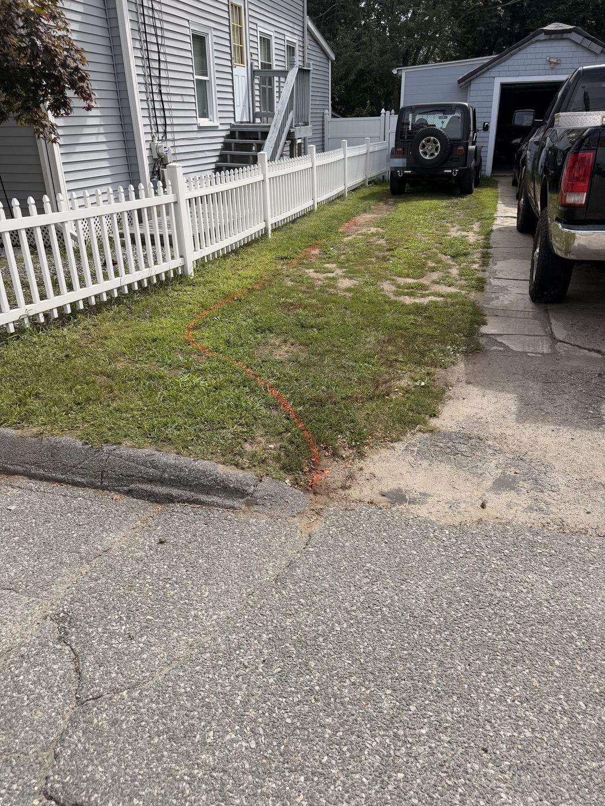
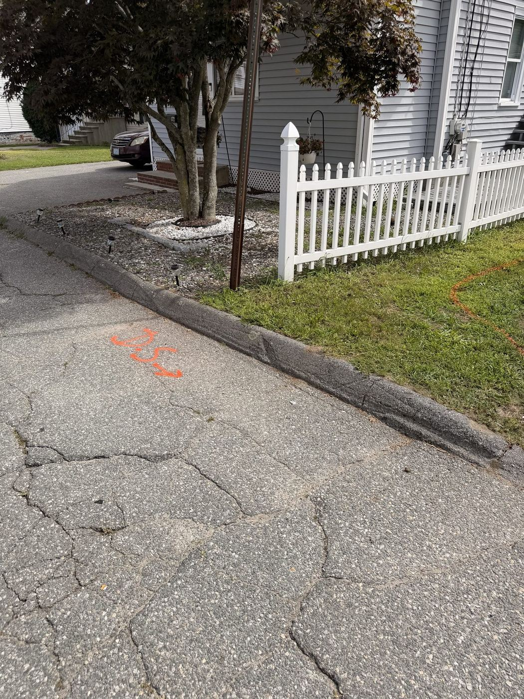
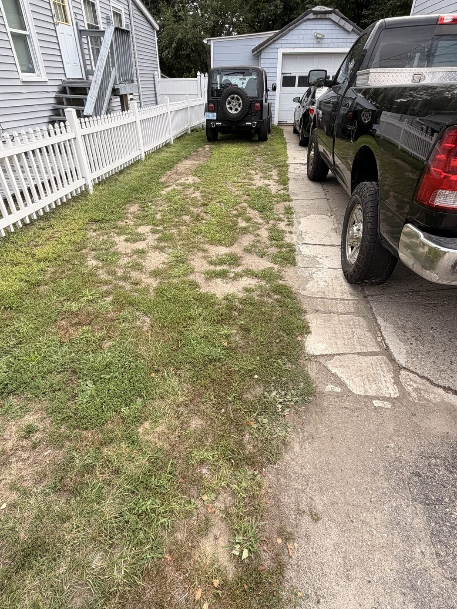

Building now
The Perez Driveway
Nothing sits on dirt.
A driveway is only as good as what is under it: the ground dug out, the base laid and compacted in lifts, and the surface set on that. This page follows the job stage by stage, in the order it happens.
- Where
- Cranston, RI
- Scope
- Driveway
- Status
- In progress
The layout
Marked before anything is dug
The new line is sprayed on the ground before a shovel goes in: across the lawn beside the old driveway, and down to where it meets the street at the curb. Everything that follows is built to that line.




Next
The build goes up here stage by stage as it is laid.
Anyone can set the middle. The edge tells you who built it.
Price your project